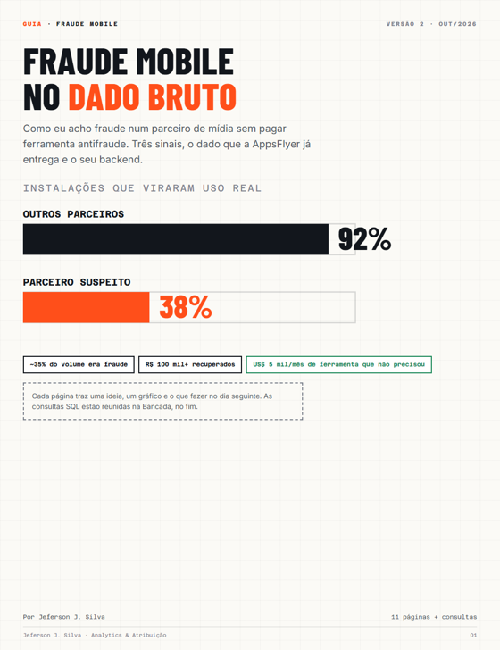

O método que recuperou mais de R$ 100 mil sem ferramenta paga. Os três sinais que eu cruzo para achar fraude num parceiro de mídia (instalação que não vira uso, IP e aparelho repetidos e receita que o backend não confirma), com as consultas SQL prontas para o dado bruto da AppsFlyer.

Ele ia instalar de qualquer jeito. O fraudador dispara cliques para ficar com o crédito.
Rastrotempo estranho entre clique e instalação, muitos cliques por instalação.
Custodesvia verba de um canal para outro.
Bot, device farm, emulador, SDK spoofing. A instalação, e às vezes os eventos, são simulados.
Rastronão vira uso, IP e aparelho repetidos, nenhuma receita.
Custoqueima verba. Pago por compra, é o mais caro.
Separar os dois muda onde você procura. Este guia começa pelo usuário falso, que foi o caso dos R$ 100 mil.
nenhum sinal sozinho prova nada.
três juntos viram caso.
Sem uma chave ligando o MMP ao seu sistema, dois dos três sinais ficam pela metade.
Do lado da AppsFlyer você usa o dado bruto: instalações e eventos com media_source, af_siteid, ip, advertising_id, device_model e os horários de clique e instalação.
Do seu lado, só duas coisas: quando a pessoa usou o app de verdade e se ela pagou.
Grave o appsflyer_id e o customer_user_id no backend desde a primeira abertura do app.
Em canal saudável, quase toda instalação vira uso real, e quase na hora.
foi aqui que o caso abriu
Uso real tem que vir do seu sistema, não do SDK do MMP. SDK spoofing fabrica a instalação e até evento dentro do app. Não fabrica sessão no seu backend.
Sem sessão própria, use evento in-app em 24h como aproximação. É mais fraco, mas já separa quem está fora da curva.
Tire a taxa por parceiro e site_id e ordene do menor para o maior. Olhe quem está muito abaixo da mediana.
Bancada · B1Usuário real é espalhado. Device farm e emulador deixam concentração.
No caso, apareceram instalações saindo dos mesmos blocos de IP e o mesmo device ID em "usuários" diferentes.
Compare sempre com os outros parceiros, nunca em número absoluto. Rede de operadora e Wi-Fi de empresa também concentram IP.
Calcule instalações por bloco de IP, por device ID e o peso do modelo mais comum, por parceiro.
Bancada · B2É o sinal que fecha a conta e o que mais pesa na negociação.
No caso, quase nenhuma instalação suspeita virou compra, mesmo com o parceiro sendo pago por compra.
Para parceiro pago por CPA, compare a compra que o MMP atribui com a compra que o seu backend confirma.
Rode as duas consultas: compra confirmada por parceiro e compra cobrada contra compra confirmada.
Bancada · B3 e B4Os três sinais pegam usuário falso. Roubo de crédito aparece no tempo entre o clique e a instalação.
Instalação poucos segundos depois do clique é rápida demais para alguém baixar um app. Uma cauda de horas e dias, com milhares de cliques por instalação, é flooding.
Pico de madrugada sem pico de uso e país do IP diferente do idioma do aparelho completam o quadro.
Veja por parceiro o % de instalações com menos de 10 segundos e com mais de 24 horas desde o clique.
Bancada · B5Cada sinal vira uma razão contra a mediana dos parceiros. Dois ou mais fora da curva no mesmo período: abra o caso.
Uso real
IP / aparelho
Receita
Esses limites são ponto de partida. Calibre com três meses de histórico antes de acusar alguém, e deixe de fora parceiro com menos de 200 instalações.
Agende o score para rodar todo mês, com alerta. Foi assim que a auditoria virou rotina.
Bancada · B6Fraude se resolve em negociação, e negociação se ganha com dossiê.
No contrato de CPA, escreva que conversão válida é a confirmada pelo seu backend, e que você pode rejeitar volume inválido por critério técnico.
Emulação refinada e fazendas que imitam gente passam pelos três sinais.
A atribuição chega agregada, sem dado por aparelho. Funciona no Android e no iOS determinístico.
A AppsFlyer (2026) aponta o orgânico como origem de 52% das instalações fraudulentas. O score por parceiro não olha para lá.
No caso deste guia, a cotação passava de US$ 5 mil por mês e a verba não justificava. Com o volume crescendo, a conta muda.
o trabalho não acaba quando a fraude é provada.
acaba quando vira rotina.
Tabelas assumidas: appsflyer.installs, appsflyer.inapp_events, app.sessoes e backend.pedidos no BigQuery. Ajuste os nomes ao seu export.
-- Sinal 1: % de instalações com uso real em até 24h, por parceiro e site_id
WITH inst AS (
SELECT appsflyer_id, customer_user_id, media_source, af_siteid, install_time
FROM `projeto.appsflyer.installs`
WHERE DATE(install_time) BETWEEN DATE_SUB(CURRENT_DATE(), INTERVAL 32 DAY)
AND DATE_SUB(CURRENT_DATE(), INTERVAL 2 DAY)
),
uso AS ( -- primeira sessão registrada pelo SEU sistema
SELECT appsflyer_id, MIN(inicio_sessao) AS primeira_sessao
FROM `projeto.app.sessoes`
GROUP BY 1
)
SELECT
i.media_source,
i.af_siteid,
COUNT(*) AS instalacoes,
ROUND(100 * COUNTIF(u.primeira_sessao BETWEEN i.install_time
AND TIMESTAMP_ADD(i.install_time, INTERVAL 24 HOUR)) / COUNT(*), 1) AS pct_uso_real_24h
FROM inst i
LEFT JOIN uso u USING (appsflyer_id)
GROUP BY ALL
HAVING instalacoes >= 200
ORDER BY pct_uso_real_24h;-- Sinal 2: concentração de IP, device ID e modelo por parceiro
SELECT
media_source,
af_siteid,
COUNT(*) AS instalacoes,
ROUND(COUNT(*) / COUNT(DISTINCT ip), 2) AS instalacoes_por_ip,
ROUND(COUNT(*) / NULLIF(COUNT(DISTINCT REGEXP_EXTRACT(ip, r'^(\d+\.\d+\.\d+)\.')), 0), 2) AS instalacoes_por_bloco_24,
ROUND(COUNT(*) / NULLIF(COUNT(DISTINCT advertising_id), 0), 2) AS instalacoes_por_device_id,
ROUND(100 * APPROX_TOP_COUNT(device_model, 1)[OFFSET(0)].count / COUNT(*), 1) AS pct_modelo_mais_comum,
ROUND(100 * APPROX_TOP_COUNT(os_version, 1)[OFFSET(0)].count / COUNT(*), 1) AS pct_versao_so_mais_comum
FROM `projeto.appsflyer.installs`
WHERE DATE(install_time) >= DATE_SUB(CURRENT_DATE(), INTERVAL 30 DAY)
GROUP BY ALL
HAVING instalacoes >= 200
ORDER BY instalacoes_por_bloco_24 DESC;-- Sinal 3: compra e receita confirmadas no backend em 30 dias, por parceiro
WITH inst AS (
SELECT appsflyer_id, customer_user_id, media_source, af_siteid, install_time
FROM `projeto.appsflyer.installs`
WHERE DATE(install_time) BETWEEN DATE_SUB(CURRENT_DATE(), INTERVAL 60 DAY)
AND DATE_SUB(CURRENT_DATE(), INTERVAL 30 DAY)
)
SELECT
i.media_source,
i.af_siteid,
COUNT(DISTINCT i.appsflyer_id) AS instalacoes,
ROUND(100 * COUNT(DISTINCT IF(p.pedido_id IS NOT NULL, i.appsflyer_id, NULL))
/ COUNT(DISTINCT i.appsflyer_id), 2) AS pct_com_compra,
ROUND(SUM(p.valor) / COUNT(DISTINCT i.appsflyer_id), 2) AS receita_por_instalacao
FROM inst i
LEFT JOIN `projeto.backend.pedidos` p
ON p.customer_user_id = i.customer_user_id
AND p.status = 'pago'
AND p.criado_em BETWEEN i.install_time AND TIMESTAMP_ADD(i.install_time, INTERVAL 30 DAY)
GROUP BY ALL
HAVING instalacoes >= 200
ORDER BY pct_com_compra;-- Compras que o parceiro cobra x compras que o backend confirma
SELECT
e.media_source,
COUNT(*) AS compras_atribuidas_mmp,
COUNTIF(p.pedido_id IS NOT NULL) AS compras_confirmadas_backend,
ROUND(100 * COUNTIF(p.pedido_id IS NOT NULL) / COUNT(*), 1) AS pct_confirmado
FROM `projeto.appsflyer.inapp_events` e
LEFT JOIN `projeto.backend.pedidos` p
ON p.customer_user_id = e.customer_user_id
AND p.status = 'pago'
AND p.criado_em BETWEEN TIMESTAMP_SUB(e.event_time, INTERVAL 1 HOUR) AND TIMESTAMP_ADD(e.event_time, INTERVAL 1 HOUR)
WHERE e.event_name = 'af_purchase'
AND DATE(e.event_time) >= DATE_SUB(CURRENT_DATE(), INTERVAL 30 DAY)
GROUP BY 1
ORDER BY pct_confirmado;SELECT
media_source,
af_siteid,
COUNT(*) AS instalacoes,
ROUND(100 * COUNTIF(TIMESTAMP_DIFF(install_time, attributed_touch_time, SECOND) < 10) / COUNT(*), 1) AS pct_menos_10s,
ROUND(100 * COUNTIF(TIMESTAMP_DIFF(install_time, attributed_touch_time, HOUR) >= 24) / COUNT(*), 1) AS pct_mais_24h,
APPROX_QUANTILES(TIMESTAMP_DIFF(install_time, attributed_touch_time, SECOND), 100)[OFFSET(50)] AS mediana_segundos
FROM `projeto.appsflyer.installs`
WHERE attributed_touch_type = 'click'
AND DATE(install_time) >= DATE_SUB(CURRENT_DATE(), INTERVAL 30 DAY)
GROUP BY ALL
HAVING instalacoes >= 200
ORDER BY pct_mais_24h DESC;-- Score: cada sinal como razão contra a mediana, e quantos estão fora da curva
WITH s AS (
SELECT media_source, af_siteid, pct_uso_real_24h, instalacoes_por_bloco_24, pct_com_compra
FROM `projeto.auditoria.sinais_parceiro` -- junte aqui o resultado dos sinais 1, 2 e 3
),
r AS (
SELECT *,
pct_uso_real_24h / PERCENTILE_CONT(pct_uso_real_24h, 0.5) OVER () AS r_uso,
instalacoes_por_bloco_24 / PERCENTILE_CONT(instalacoes_por_bloco_24, 0.5) OVER () AS r_ip,
pct_com_compra / NULLIF(PERCENTILE_CONT(pct_com_compra, 0.5) OVER (), 0) AS r_receita
FROM s
)
SELECT *,
IF(r_uso < 0.6, 1, 0) + IF(r_ip > 2, 1, 0) + IF(r_receita < 0.3, 1, 0) AS sinais_fora
FROM r
ORDER BY sinais_fora DESC, r_receita;30 minutos, ao vivo, nas suas plataformas. Você sai sabendo se algum parceiro está fora da curva. Sem compromisso.
jefersonjs.com.br · contato@jefersonjs.com.br
Fontes: AppsFlyer, The State of Fraud for Marketers 2026 e o guia de campo de fraude mobile da AppsFlyer. Números do caso anonimizados.
Quer guardar para consultar depois? O guia completo em PDF, página por página, com todas as consultas.
Baixar o PDF ↓30 minutos, de graça. Entro nas suas plataformas e mostro se algum parceiro está fora da curva.
Quero meu diagnóstico grátis →